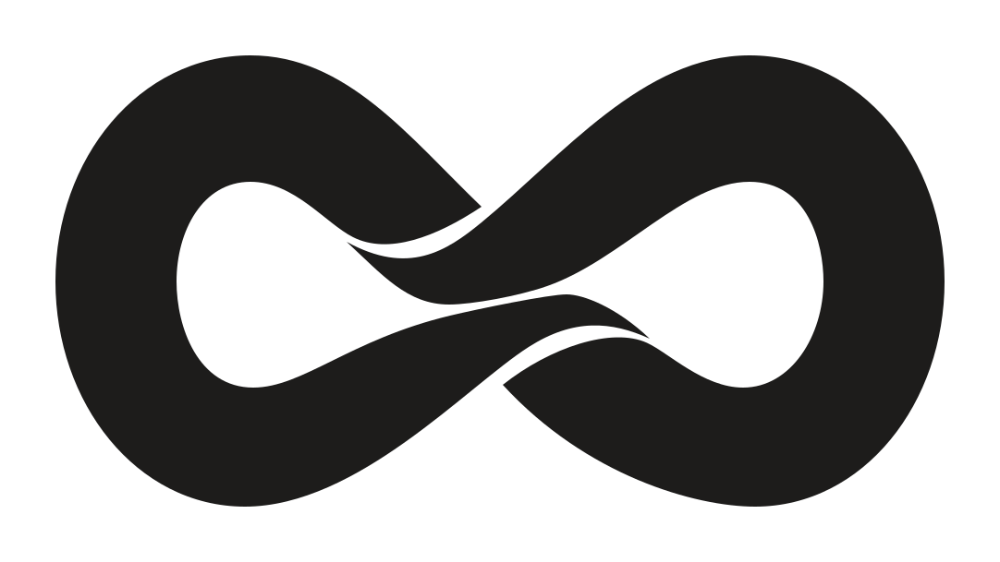
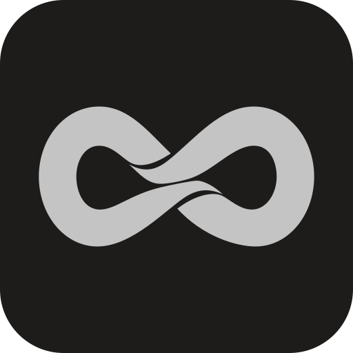
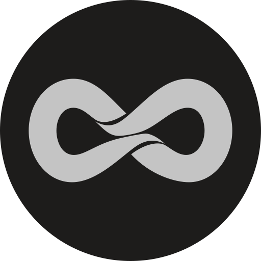
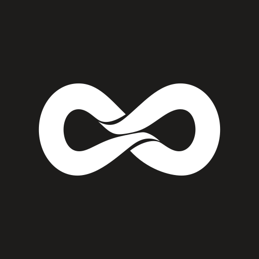
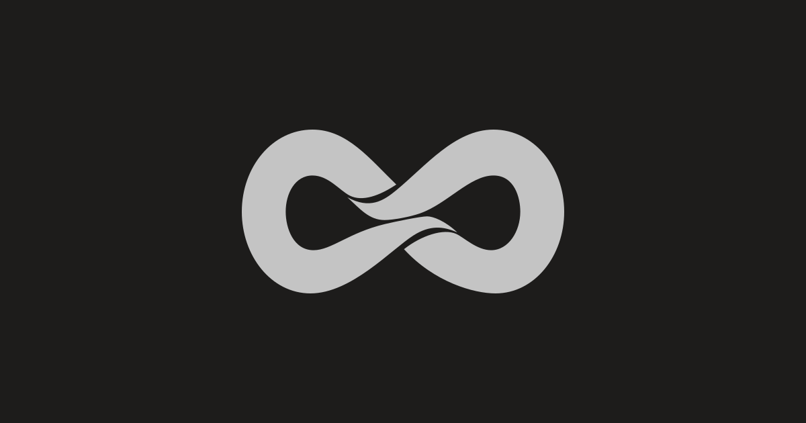

PRODUCTION ASSETS / MASTER APPROVED & LOCKED
Один мастер. Все контексты.
Геометрия утверждённого SVG сохранена. Этот лист показывает цвет, размер, поля и обрезку производных материалов.
01 / COLOR SYSTEM
Серебро, графит и монохром
Светлый знак / тёмный фон
Графитовый знак / светлый фон

Измеренный контраст
| Пара | Контраст | Рекомендация |
|---|
| silver / charcoal | 9.76:1 | preferred |
| white / charcoal | 17.02:1 | preferred |
| charcoal / white | 17.02:1 | preferred |
| black / white | 21.00:1 | preferred |
| white / black | 21.00:1 | preferred |
| silver / white | 1.74:1 | avoid |
| silver / black | 12.04:1 | preferred |
Прозрачные варианты
На светлом фоне используйте charcoal/black. Silver предназначен для тёмного фона.
02 / OPTICAL SIZE
Master и отдельная micro-версия
Master · исходная геометрия
16 px
20 px
24 px
32 px
40 px
48 px
64 px
96 px
16 px · ×4
24 px · ×4
32 px · ×4
48 px · ×4
Micro · только компактные контексты
16 px
20 px
24 px
32 px
40 px
48 px
64 px
96 px
16 px · ×4
24 px · ×4
32 px · ×4
48 px · ×4
Micro расширяет три существующих негативных канала векторной маской. Исходные path мастера сохранены дословно. Обычный micro рассчитан на 24–64 px. Для favicon 16/32/48 применяется усиленная настройка. Master остаётся неизменным.
03 / CONTAINERS
Единые поля, три формы
square · 78% ширины
rounded-square · 78% ширины
circle · 78% ширины Поля слева и справа: 11% canvas. Радиус rounded-square: 18%. Круглая обрезка сохраняет весь знак.
04 / PLATFORM CROP SIMULATIONS
Примерка для платформ
Без загрузки в аккаунты. LinkedIn: файл для Page/бренд-контекста; это не подтверждение допустимости логотипа вместо личного фото.
05 / FAVICON & INSTALL ICONS
Светлая и тёмная рамка браузера
Apple touch icon
Файл квадратный и непрозрачный; скругление здесь моделирует систему.
PWA maskable

Знак находится внутри центрального круга радиусом 40% canvas.
06 / WEBSITE CONTEXT
Пример использования на сайте
maxzolotoy.com · измеренный фон
SVG width: 220px; height: auto
Светлый layout / CV / README
Отдельный контрастный вариант
zolotoy.dev не вернул доступный контекст при исследовании (HTTP 403). Сайты не изменялись.
07 / SOCIAL CARD
OpenGraph · 1200 × 630

Рабочий формат social card; основной знак также целиком сохраняется в центральной квадратной обрезке.